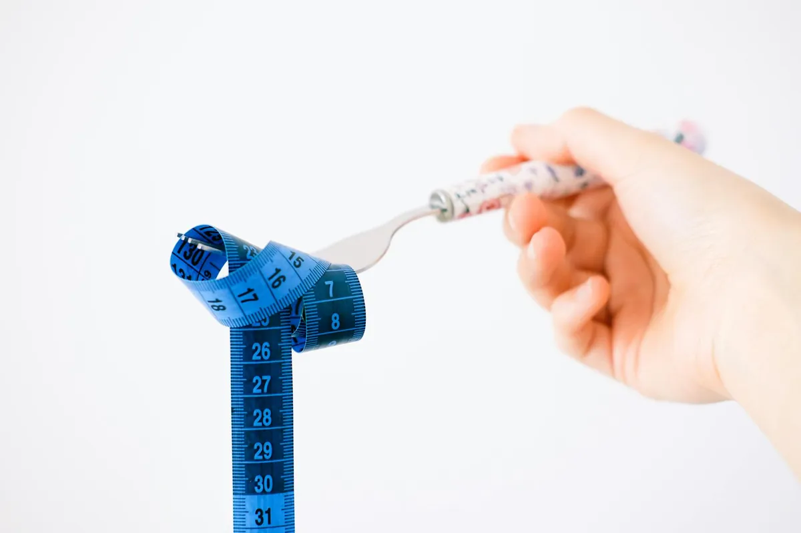

Intermittent Fasting for Women: Benefits, Risks & How-To Guide

Key takeaways
- I remember staring at my reflection, feeling so utterly defeated.
- My energy levels were in the basement, my weight felt stuck no matter what I did, and my monthly cycle seemed to have a mind of its own, bringing with it mood swings that felt like a rollercoast
- Track what feels sustainable and adjust gradually.
I remember staring at my reflection, feeling so utterly defeated. My energy levels were in the basement, my weight felt stuck no matter what I did, and my monthly cycle seemed to have a mind of its own, bringing with it mood swings that felt like a rollercoaster. I’d tried every diet under the sun, but nothing seemed to stick, and honestly, the constant restriction was exhausting. Then, I stumbled upon intermittent fasting for women, and it felt like a potential game-changer. But I was also scared – would it mess with my hormones? Was it even safe for me? That’s why I’m diving deep into Intermittent Fasting for Women: Benefits, Risks & How-To Guide, to help you navigate this too.
For years, the narrative around fasting was pretty one-size-fits-all. But our bodies, especially women’s bodies, are complex and cyclical. Understanding how Intermittent Fasting for Women: Benefits, Risks & How-To Guide can specifically impact us is crucial. The science suggests it’s not just about cutting calories; it’s about giving our cells a break, promoting cellular repair (autophagy), and potentially improving insulin sensitivity. For me, this shift in perspective was huge. It wasn't about deprivation, but about strategic timing.
One of the most exciting benefits I’ve explored is its potential impact on hormonal balance. Studies suggest that intermittent fasting can help regulate hormones like insulin and leptin, which play significant roles in appetite and metabolism. When these are more balanced, it can lead to better energy levels and reduced cravings. I've personally noticed a difference in my mid-afternoon slump since I started paying attention to my eating windows. It’s a subtle but powerful change that makes a big difference in my day.
Weight management is often a primary driver for exploring fasting, and for good reason. By condensing your eating window, you naturally tend to consume fewer calories. But beyond that, intermittent fasting can boost your metabolism. Some research points to an increase in norepinephrine, a hormone that can help your body burn more calories. This isn't a magic bullet, but combined with mindful eating, it can be a powerful tool. I found it helped me break free from mindless snacking, which was a huge win for my weight goals. This is a great starting point for a related healthy tip.
Now, let's talk about the menstrual cycle. This is where things get really nuanced for women. Some experts recommend adjusting your fasting window based on where you are in your cycle. For instance, some women find it beneficial to ease up on fasting during their luteal phase or around their period when their bodies might need more energy and nutrients. I’ve experimented with this, and it’s made a noticeable difference in how I feel. It’s about working *with* your cycle, not against it. This is a topic worth exploring further in another practical guide.
Potential risks are real and need to be acknowledged. For some women, especially those with a history of eating disorders or certain medical conditions like PCOS or thyroid issues, intermittent fasting might not be suitable. It can also lead to nutrient deficiencies if not planned carefully, or cause side effects like headaches, fatigue, and irritability, especially when you're starting out. I experienced some initial headaches myself, which is why I emphasize starting gently. It's essential to consult with a healthcare provider before making any significant changes to your diet, especially if you have underlying health concerns. This is a similar wellness insight I often share.
The 2-Minute Win
Before you even think about your first fasting window, grab a glass of water and drink it. Hydration is your best friend when fasting, and starting this habit right now sets you up for success.
So, how do you actually get started with intermittent fasting for women? I recommend the 16/8 method as a good starting point. This involves fasting for 16 hours and having an 8-hour eating window. For example, you might finish dinner by 7 PM and not eat again until 11 AM the next day. It sounds daunting, but many find it easier than they expect, especially if they sleep through a good chunk of the fasting period. The key is consistency, and finding a rhythm that works for your lifestyle is vital to stay consistent with this.
Pro-Tip: Don't be afraid to adjust your fasting window based on your social life or how you feel. If a social event falls within your fasting window, it's okay to shift it. Perfection isn't the goal; sustainable progress is. I’ve learned to be flexible, and it’s made all the difference.
Listen to your body above all else. If you feel excessively fatigued, dizzy, or unwell, it’s a sign to break your fast or adjust your approach. Intermittent fasting isn't meant to be a punishment; it's a tool that should empower you. Exploring different fasting schedules, like the 5:2 method (eating normally five days a week and restricting calories on two non-consecutive days) or even shorter fasting windows, might be beneficial. Remember to focus on nutrient-dense foods during your eating window to ensure you're getting all the vitamins and minerals you need. You can explore more health guides here.
Educational only — not medical advice.
Recommended Reading
- Intermittent Fasting for Weight Loss: Benefits & How-To Guide for Beginners
- Calorie Counting vs. Awareness: Which Works Better for Sustainable Weight Loss?
- Small Changes, Big Health Wins: Habits That Actually Stick
More in health
Vitamin B1: The 'Crazy' Theory That Could Boost Your Health
Discover the surprising science behind Vitamin B1: The 'Crazy' Theory That Could Boost Your Health. Learn how thiamine i
Read article → health
healthBiohacking for Beginners: Unlock Your Best Health & Energy Naturally
Discover Biohacking for Beginners: Unlock Your Best Health & Energy Naturally with simple, actionable steps for sleep, n
Read article →Related posts
Vitamin B1: The 'Crazy' Theory That Could Boost Your Health
Discover the surprising science behind Vitamin B1: The 'Crazy' Theory That Could Boost Your Health. Learn how thiamine i
Read article →healthBiohacking for Beginners: Unlock Your Best Health & Energy Naturally
Discover Biohacking for Beginners: Unlock Your Best Health & Energy Naturally with simple, actionable steps for sleep, n
Read article → health
healthBoost Mobility: Nutrition & Movement Tips for Joint Comfort
Discover practical nutrition and movement tips to improve joint mobility and reduce discomfort. A relatable guide to fee
Read article →